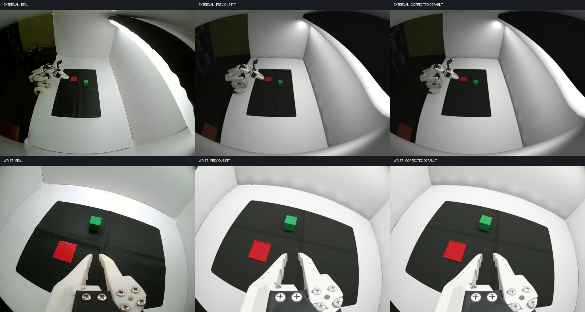

The unsupported white support slab has been removed. Robot mounting, motor coordinates, separate camera optics, initial object poses, the shallow red plate and fixed material/lighting estimates now share one scene.
The supplied follower and leader calibration files are checked against every saved encoder value. Commands pass through follower tick quantization; firmware homing offsets are applied once. The files do not specify surveyed CAD joint zeros. Training poses also constrain the full CAD jaws above the mat.

Real video is on the left. The cube on the right is initialized once and stays dynamic and collision-enabled. Later image measurements never reposition it. The first five arm joints follow observed states and the jaw uses recorded commands.
165 paired views; episodes 0–7 train the fit and episodes 8–9 are held out. Masked held-out mat-edge residual: 3.49 px → 4.34 px. These residuals include the fit's visibility weights; they are not a measured millimeter contact tolerance. Encoder-derived angular scales are fixed during calibration.
Maximum recorded-pose jaw intersection with the mat: 1.36 mm. Previous fit: 10.81 mm. The revised fit accepts a small image residual increase to reduce this physical inconsistency.
Endpoint error compares the simulated cube center to its reconstructed real final position. An on-plate center does not establish a fully contained footprint. High force spikes and penetration expose remaining contact-model error.
Cube centers on the plate: 8/10. Median reference endpoint error: 5.56 mm. Previous model: 4/10, 19.25 mm. Held-out loaded-jaw tracking RMS: 0.52°.
| Episode | Placement | Endpoint XY error, mm | Peak penetration, mm | Peak reported force, N |
|---|---|---|---|---|
| 0 | Endpoint mismatch | 5.2 | 0.458 | 4.0 |
| 1 | Within 5 mm of reference | 2.3 | 0.361 | 3.5 |
| 2 | Within 5 mm of reference | 2.3 | 2.945 | 885.3 |
| 3 | Endpoint mismatch | 12.8 | 0.215 | 3.8 |
| 4 | Endpoint mismatch | 5.9 | 0.930 | 31.9 |
| 5 | Within 5 mm of reference | 3.4 | 0.216 | 9.0 |
| 6 | Endpoint mismatch | 6.2 | 0.465 | 11.0 |
| 7 | Endpoint mismatch | 9.5 | 0.896 | 209.3 |
| 8 | Endpoint mismatch | 9.2 | 0.493 | 16.2 |
| 9 | Within 5 mm of reference | 3.8 | 0.841 | 52.4 |
The gripper uses recorded unloaded response timing. Effective contact compliance is selected by loaded-jaw tracking on training episodes; it is a surrogate for omitted arm/jaw flexibility. Material stiffness, loaded servo impedance and friction remain independently unmeasured. The report retains unsuccessful cases. This is an improvement in alignment and diagnosis, not a claim of a fully calibrated physical twin.
Complete fit, motor-unit inference and validation measurements